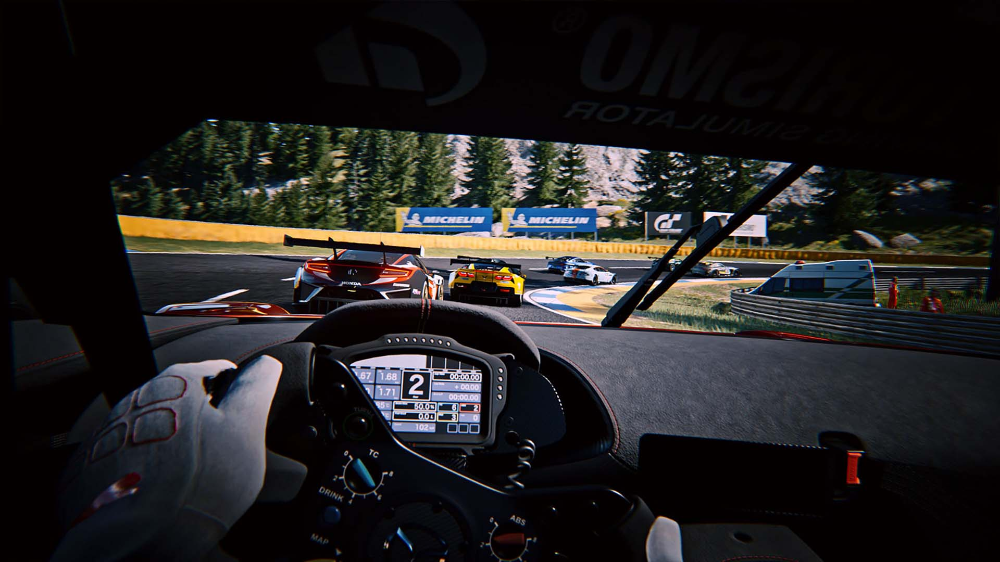
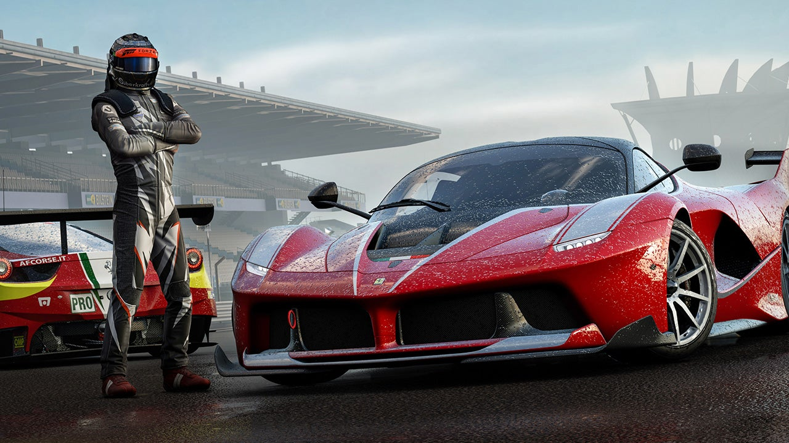
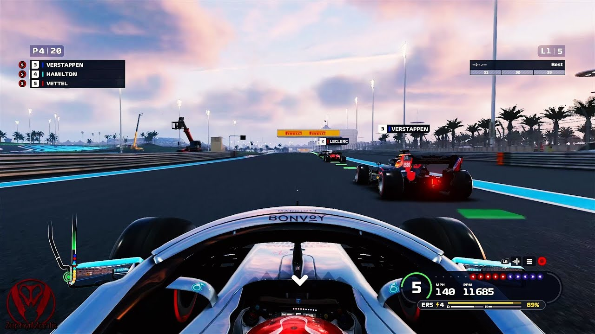
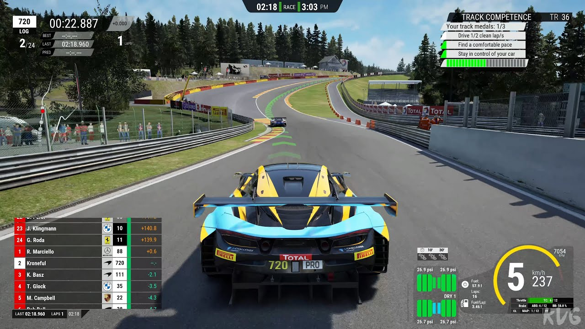
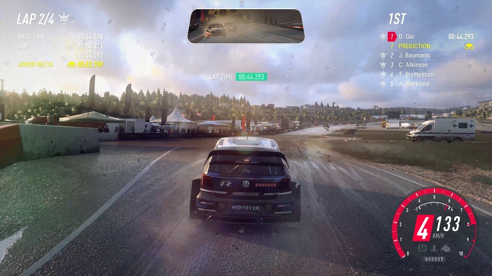
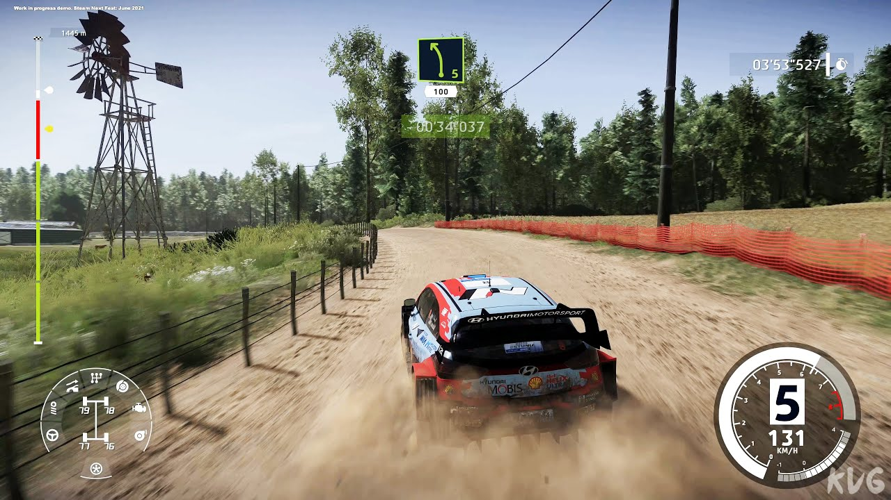
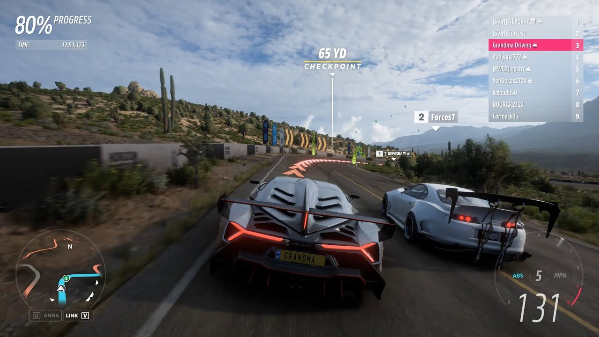

âï¸ğŸ Essas foram algumas das conquistas da equipe Legião da Velocidade ao longo de 10 anos de história. Eles se tornaram uma das equipes mais respeitadas e admiradas do cenário dos jogos de corrida, mostrando talento, dedicação e paixão pelo esporte. Eles também inspiraram milhares de fãs e seguidores pelo mundo todo, que acompanham os seus vÃdeos, as suas redes sociais e as suas transmissões ao vivo. Eles são um exemplo de sucesso e superação no mundo dos esports. 🏎💨
CONQUISTAS
2016:

🏆🎮 Em 2016, a equipe Legião da Velocidade participou do Campeonato Brasileiro de Project CARS, organizado pela Liga Nacional de Esportes Eletrônicos (LNEE). Eles competiram contra as melhores equipes do paÃs, em 12 etapas realizadas em diferentes circuitos. Eles mostraram um desempenho consistente e dominante, vencendo 10 das 12 etapas e conquistando o tÃtulo de campeões brasileiros de Project CARS. 🏁🏎
2017:
🎮🏆 Em 2017, a equipe Legião da Velocidade se aventurou no jogo Gran Turismo Sport, lançado para PS4. Eles se inscreveram na Copa do Mundo de Gran Turismo, um torneio mundial que reunia os melhores jogadores de cada região. Eles representaram o Brasil na fase regional, disputada online, e se classificaram para a fase final, disputada presencialmente em Paris, França. Eles enfrentaram equipes de vários paÃses, como Japão, Estados Unidos, Alemanha e Itália, e surpreenderam o mundo ao vencerem a Copa do Mundo de Gran Turismo, tornando-se os primeiros brasileiros a conquistar esse feito. 🌎🏎🏆
2018:
🎮🏁 Em 2018, a equipe Legião da Velocidade continuou a jogar Gran Turismo Sport, mas também voltou a jogar Forza Motorsport, que lançou a sua sétima edição para Xbox One e PC. Eles participaram do Forza Racing Championship, um campeonato oficial organizado pela Microsoft e pela Turn 10 Studios. Eles competiram online contra milhares de jogadores de todo o mundo, em várias categorias e divisões. Eles se destacaram na categoria Elite, a mais alta e difÃcil do campeonato, e se classificaram para a final mundial, realizada em Londres, Inglaterra. Eles disputaram o tÃtulo contra as equipes mais renomadas do cenário de Forza Motorsport, como Lazarus, Red Bull Racing Esports e Williams Esports, e conseguiram vencer o Forza Racing Championship, levando para casa um prêmio de 100 mil dólares. 🏆💰🏎
2019:
🏎💨 Em 2019, a equipe Legião da Velocidade decidiu se dedicar ao jogo F1 Racing, que lançou a sua edição de 2019 para PC, PS4 e Xbox One. Eles se inscreveram na F1 Esports Series, uma série oficial de esports baseada no campeonato mundial de Fórmula 1. Eles competiram online contra outros jogadores nas qualificatórias regionais, e conseguiram uma vaga na Pro Draft, uma etapa onde as equipes reais da F1 escolhiam os seus pilotos virtuais. Eles foram escolhidos pela equipe McLaren Shadow, uma das mais tradicionais e prestigiadas da F1. Eles passaram a fazer parte da equipe McLaren Shadow, e disputaram a Pro Series, uma etapa onde as equipes virtuais competiam entre si em 12 corridas realizadas em diferentes circuitos. Eles mostraram um alto nÃvel de habilidade e estratégia, e conseguiram vencer a F1 Esports Series, sagrando-se campeões mundiais de F1 Racing. 🏆🌍🎮
2020:
🏁🏎 Em 2020, a equipe Legião da Velocidade continuou a jogar F1 Racing, mas também experimentou o jogo Assetto Corsa Competizione, lançado para PC, PS4 e Xbox One. O jogo era focado no campeonato mundial de GT3, uma categoria de carros esportivos. Eles participaram do SRO Esports GT Series, um campeonato oficial organizado pela SRO Motorsports Group, a entidade que regula o campeonato real de GT3. Eles competiram online contra outros jogadores nas qualificatórias regionais, e se classificaram para a final mundial, realizada em Barcelona, Espanha. Eles enfrentaram equipes de vários paÃses, como França, Alemanha, Itália e Reino Unido, e conseguiram vencer o SRO Esports GT Series, tornando-se campeões mundiais de Assetto Corsa Competizione. 🌍🏆🎮
2021:
🏁🚗 Em 2021, a equipe Legião da Velocidade manteve o seu foco nos jogos F1 Racing e Assetto Corsa Competizione, mas também se aventurou no jogo Dirt Rally 2.0, lançado para PC, PS4 e Xbox One. O jogo era focado no campeonato mundial de rali, uma modalidade de corrida em terrenos irregulares e variados. Eles participaram do Dirt Rally 2.0 World Series, um campeonato oficial organizado pela Codemasters e pela Motorsport Games. Eles competiram online contra outros jogadores nas qualificatórias regionais, e se classificaram para a final mundial, realizada em Mônaco. Eles enfrentaram equipes de vários paÃses, como Finlândia, Suécia, Polônia e Nova Zelândia, e conseguiram vencer o Dirt Rally 2.0 World Series, tornando-se campeões mundiais de Dirt Rally 2.0. 🌍🏆🎮
2022:
🏁🚗 Em 2022, a equipe Legião da Velocidade continuou a jogar F1 Racing, Assetto Corsa Competizione e Dirt Rally 2.0, mas também experimentou o jogo WRC 10, lançado para PC, PS4, PS5, Xbox One e Xbox Series X/S. O jogo era focado no campeonato mundial de rali, mas também incluÃa eventos históricos e especiais para celebrar os 50 anos da competição. Eles participaram do WRC Esports Championship, um campeonato oficial organizado pela Nacon e pela KT Racing. Eles competiram online contra outros jogadores nas qualificatórias regionais, e se classificaram para a final mundial, realizada em Paris, França. Eles enfrentaram equipes de vários paÃses, como França, Bélgica, Portugal e Argentina, e conseguiram vencer o WRC Esports Championship, tornando-se campeões mundiais de WRC 10. 🏆🌍🎮
2023:
🚗🌮 Em 2023, a equipe Legião da Velocidade manteve o seu foco nos jogos F1 Racing, Assetto Corsa Competizione, Dirt Rally 2.0 e WRC 10, mas também se aventurou no jogo Forza Horizon 5, lançado para PC, Xbox One e Xbox Series X/S. O jogo era um jogo de corrida de mundo aberto que se passava no México. Você podia explorar cenários deslumbrantes, dirigir mais de 500 carros licenciados, participar de eventos variados e personalizar o seu estilo de jogo. O jogo também contava com um sistema dinâmico de clima e hora do dia, que mudava o ambiente e a jogabilidade do jogo. Você podia jogar sozinho ou online com outros jogadores, criando ou entrando em clubes e compartilhando suas aventuras. Eles participaram do Forza Horizon Festival, um festival online que reunia os melhores jogadores de cada região. Eles representaram o Brasil na fase regional, disputada online, e se classificaram para a fase final, disputada presencialmente em Cancún, México. Eles enfrentaram equipes de vários paÃses, como Estados Unidos, Canadá, Reino Unido e Austrália, e conseguiram vencer o Forza Horizon Festival, tornando-se os campeões mundiais de Forza Horizon 5. 🏆🇲🇽🎮